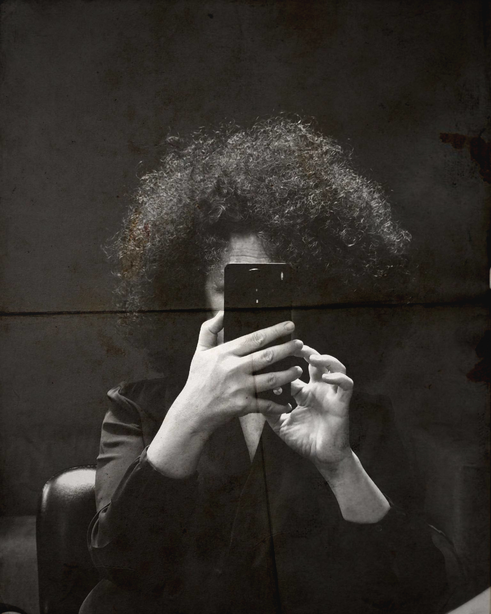

Detrás del Lienzo
Soy Herminia López, artista y artesana afincada en Lucena, Andalucía.
Mi trabajo se centra en la pintura aplicada tanto al arte tradicional como a la moda artesanal.
Tras formarme en la Escuela de Artes y Oficios de Córdoba y participar en diversas exposiciones colectivas, he tenido el orgullo de realizar obras para otros artistas de la zona, compartiendo sinergias y proyectos locales.
En el taller investigo la luz, el color y la textura para dar vida a retratos y obras pictóricas en acuarela, acrílico o carboncillo, buscando siempre capturar la identidad de cada rostro o lugar.
Esta misma exigencia técnica la traslado a la moda artesanal. Bajo la premisa de que "el arte también se viste", transformo complementos de ceremonia y piezas cotidianas —como abanicos con varillaje certificado AEA, bolsos, capotas, sombreros, bastidores y lazos— en soportes donde mis diseños pintados a mano cobran vida, incorporando en ocasiones delicados detalles en bordado para rematar la pieza.
No entiendo el arte como un proceso aislado, sino como un proyecto compartido.
Mi objetivo no es imponer una visión, sino estudiar las ideas de quienes confían en mi trabajo para dar forma a piezas con identidad propia, hechas a mano en España y pensadas para perdurar.
¿Te interesa alguna obra?
hermilopezvico@gmail.com